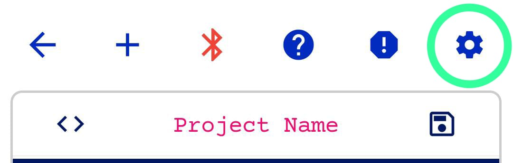
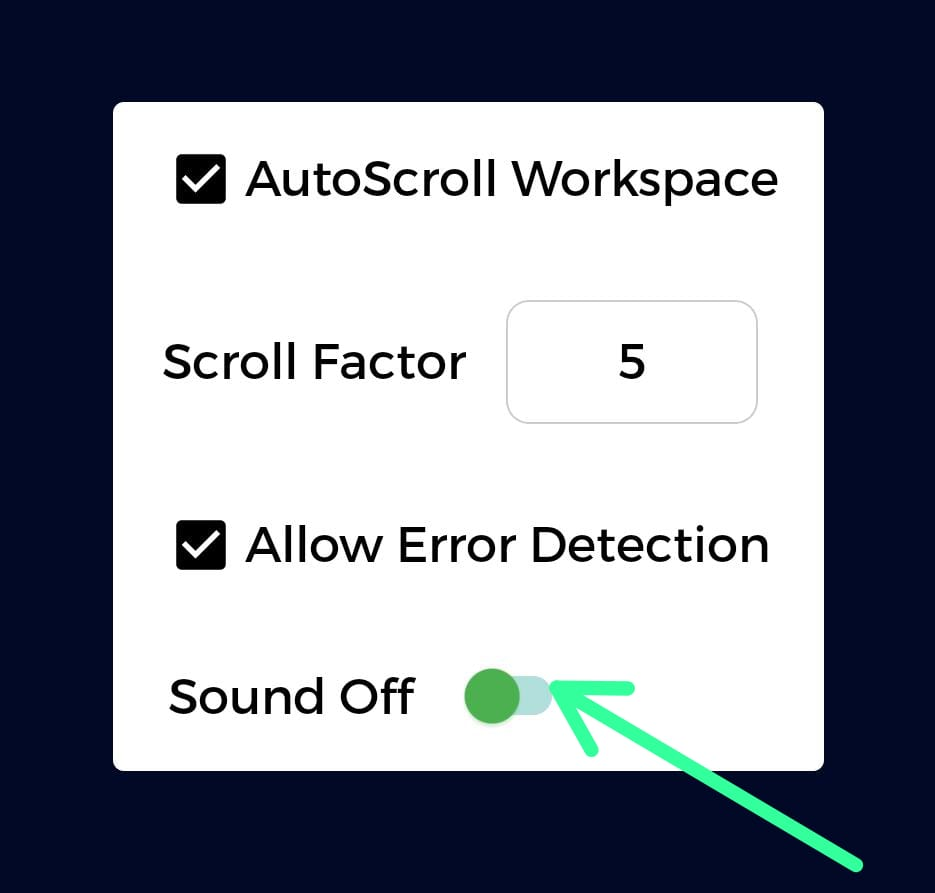
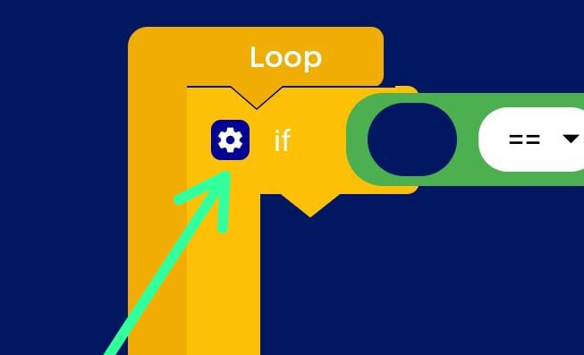
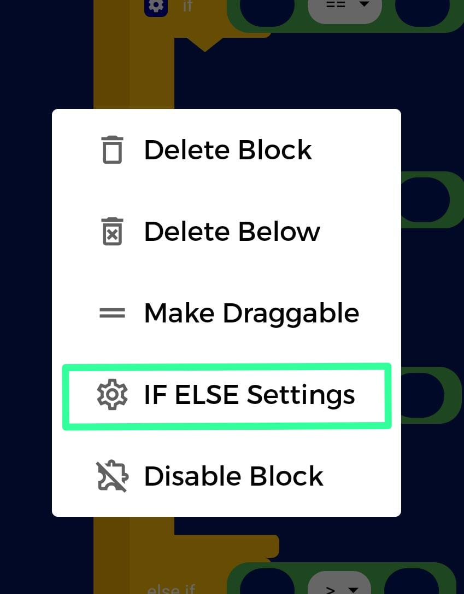
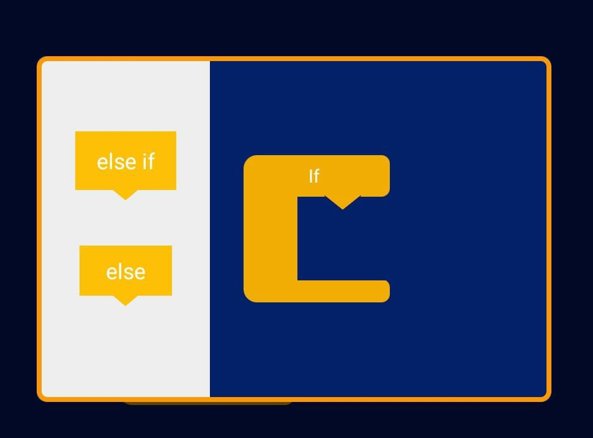
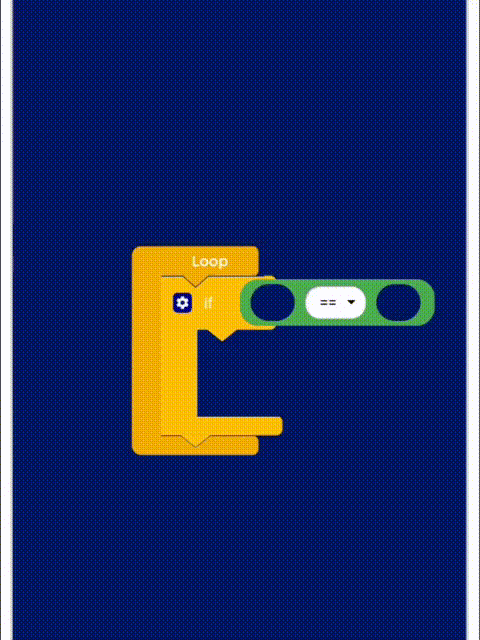
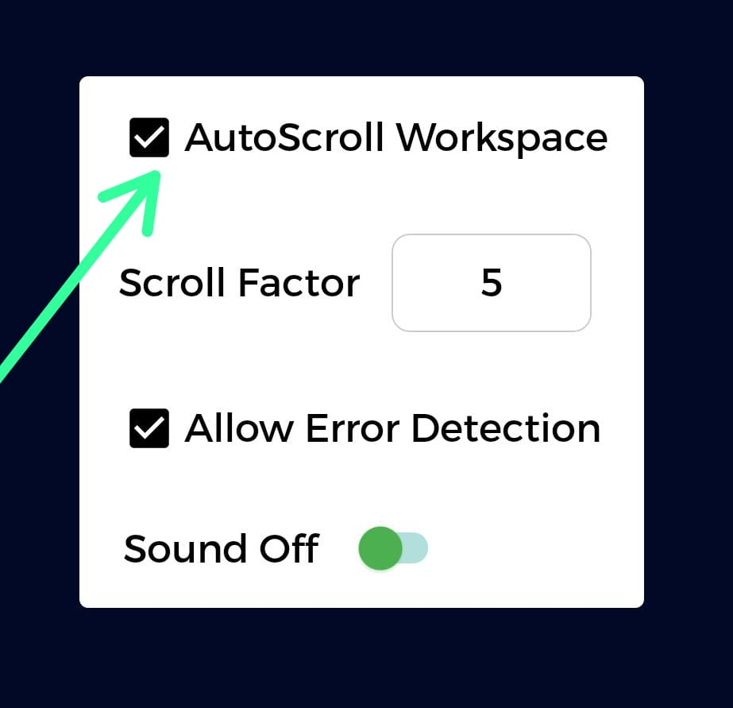
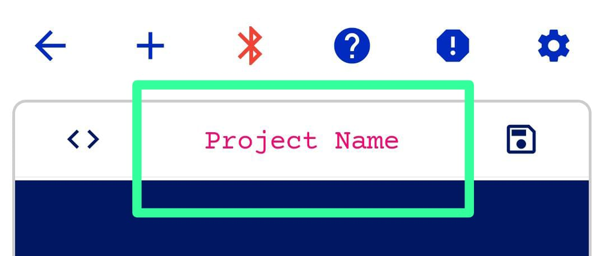
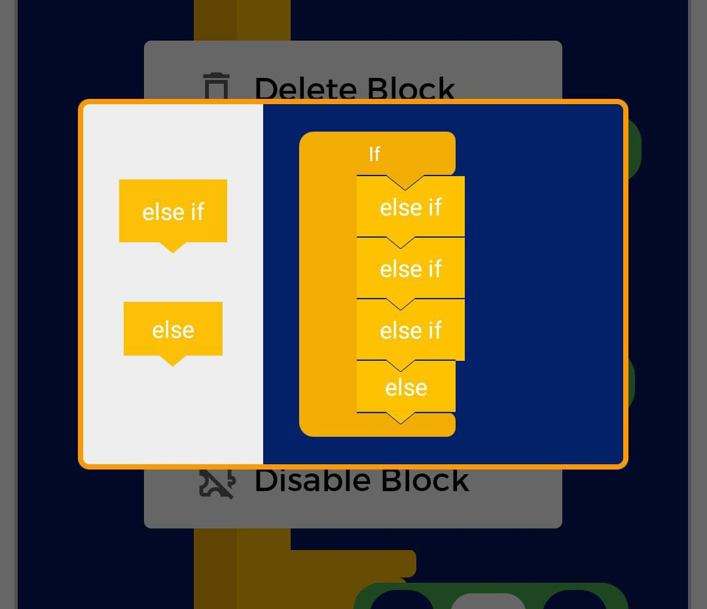
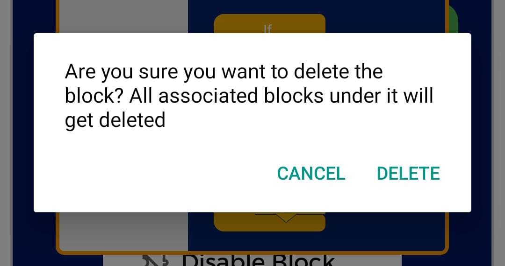

FAQ'S
How do I turn the sound off in Code?
1. Click on the settings icon in Code

2. Toggle the sound on button

Adding Else If & Else blocks to an IF block
To add an Else If/Else block to an existing If block:
1. Click on the settings icon on the If block to which Else If/Else is attached.

2. A dialog box opens, click "IF ELSE SETTINGS"

3. Another dialog box opens where you can set the configuration of the Else If and Else Blocks.

4. Click on the block(in the highlighted area) you want to add; you can add multiple else ifs but only one else block and only at the end
5. Drag the block and add it in the workspace and accordingly else if & else would be added.

Blocks didn't get saved
The Code feature doesn't have an auto-save feature, so you need to manually click on the save button before you close the app, or else the new code you create, won't be saved.
Report an error
Click on the icon on the workspace and a window should open up. Type the details on the error and click on the submit button. The error will be reported to us
Code gets autoscrolled
1. Click on the settings icon in Code
2. You will see an option "AutoScroll Workspace". Enabling it will cause the workspace to scroll as you drag the blocks.

Why aren't blocks attaching?
Each block has a data type; For example - true block has a boolean data type and can be attached to logic operator or variables.
Problem with the else block in If then else
If you can't attach anything after the else block in the if then else settings window, it is because else has to be the last part and else if can't be placed after the else block in the if then else settings
Facing an error in the application
If you face an error in the application in the Code section, please don't save the blocks. It will cause a problem while loading your project next time you try to open it.
Renaming a project
Steps to rename a project:
1. Open the Project
2. Click on the area where your project name is displayed on the Workspace

3. Type the new name of the project in the dialog box that appears
4. Click on ok and the project name is changed
Deleting Else Ifs and Else blocks
To delete an Else If/Else block:
1. Click on the settings icon on the If block to which Else If/Else is attached.
2. A dialog box opens, click "IF THEN ELSE SETTINGS"
3. Another dialog box opens where you can see the configuration of the Else If and Else Blocks.

4.Long press on the block you want to delete and a confirmation box appears. Click Delete to delete the block.

Warning: Deleting an Else If/Else block will delete all the blocks inside it.
What is Scroll Factor in the settings window?
Scroll Factor is the measurement of autoscroll the app does when you drag the blocks horizontally. It works when the draggable block has reached either ends of the workspace so it automatically scrolls horizontally by the scroll factor.
Note: In order for the scrolling to work, "AutoScroll Workspace" feature in the settings must be enabled.
Deleting a Variable Block
Deleting an Initialize Variable block will result in deleting the variable as well, and also any Set Variable blocks that have the variable which was deleted, will be reset to empty variable